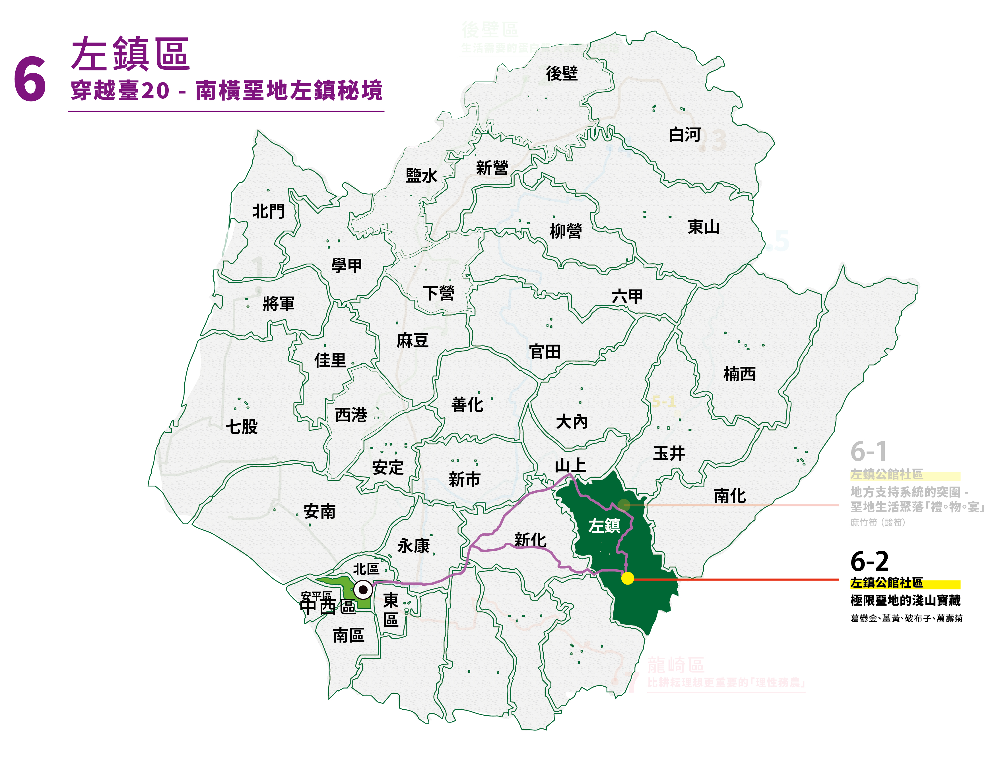
公舘社區由二寮、草山、岡林三個里組成， 是早期為清代駐軍所在所稱舊名為「公舘」。
臺南市左鎮公舘社區發展協會成立於1996年，典型山村型農業社區，居住人口分散，位處於水資源保護區不利產業發展，境內多白堊土栽種不易，青年人口外流，高齡人口不斷成長 ;社區以向自然學習共處的淺山智慧，發展社區自有的物產品牌：葛鬱金、薑黃、破布子，並長年以『DOC數位導入地方』計畫累積地方故事與人物紀錄的影音資料庫。
來自於左鎮東南隅的公舘社區，境內富有天然環境、人文特色。
近年來，致力於長輩關懷、社區產業經濟、文化復振、區內孩童教育等面向著手發展，創造共好、共同好時光。
主力推手人稱柳足姐，是左鎮公舘社區協會 理事長
✧ 地點資訊：台南市左鎮區岡林里31號（岡林國小）
✧ 預約電話：06 573 0107
✧ 網站
✧ 開放時間：週一～週日 0800-1700
✧ 小提醒：拜訪葛鬱金故事館前，務必事先聯繫。
〡遊程體驗〡
1.月桃編織
2.竹藝編織
3.葛鬱金食農教育
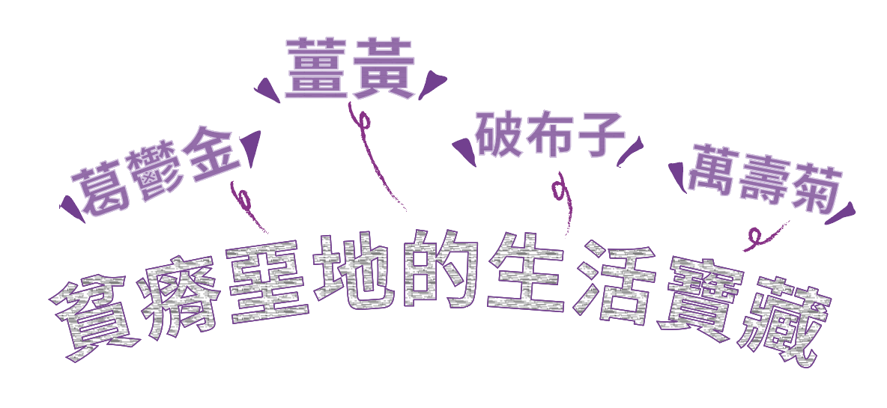
(註)藥用植物圖鑑-葛鬱金：https://kmweb.moa.gov.tw/subject/subject.php?id=37288
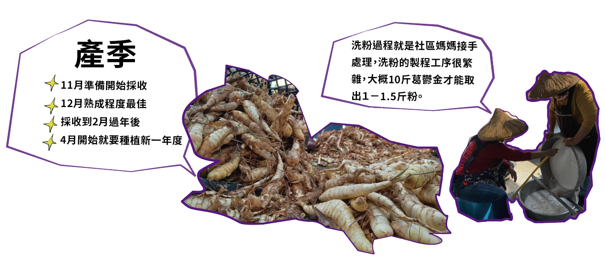
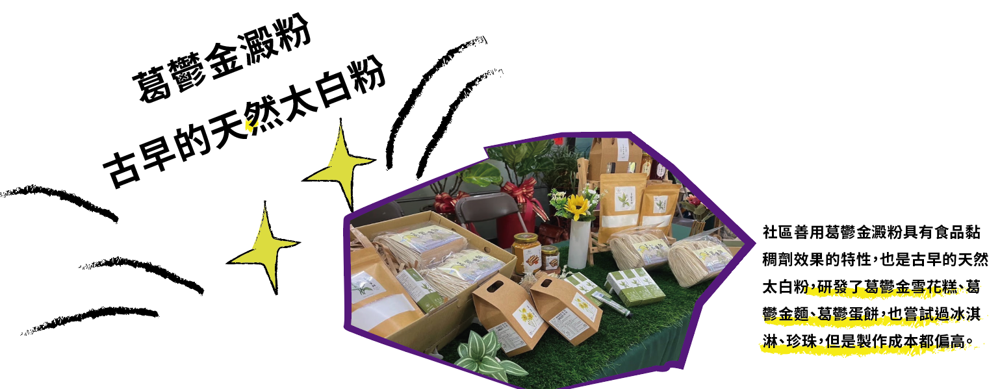
「世界第一等 」(註)：2024.02.25│《台灣第一等》完整版 https://www.youtube.com/watch?v=JLG3a4w7cn0
「輕青霜」(註) ： 好時。左鎮公館 線上訂單：https://site-1722738-9856-3312.mystrikingly.com/
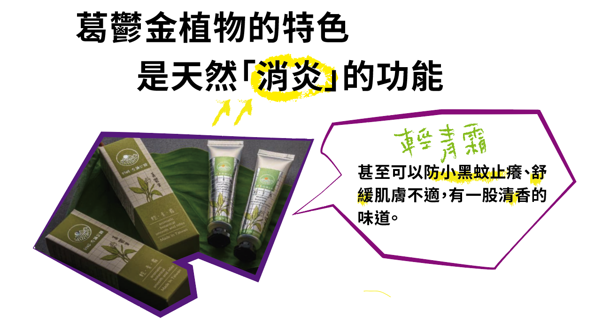
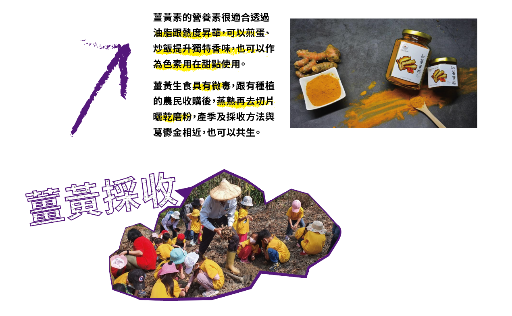
薑黃的產季與葛鬱金相近，聽在地長輩說二戰前日本人會來左鎮收購薑黃，
種植地多在丘陵地，滿早就有醫療研究認定其藥用成分，早期常見保健品就是薑黃粉膠囊。
生技公司曾經與在地農民契作，表示左鎮地方出產的檢測薑黃素表現良好 ; 它的營養素很適合透過油脂跟熱度昇華，可以煎蛋、炒飯提升獨特香味，也可以作為色素用在甜點使用，未來可能會推出薑黃麵。
那目前我們這邊販售的「紅薑黃粉」做法，因為薑黃生食也是具有微毒，通常是蒸熟再去切片曬乾磨粉，現在就是跟有種植的農民收購，產季及採收方法與葛鬱金相近，也可以共生。
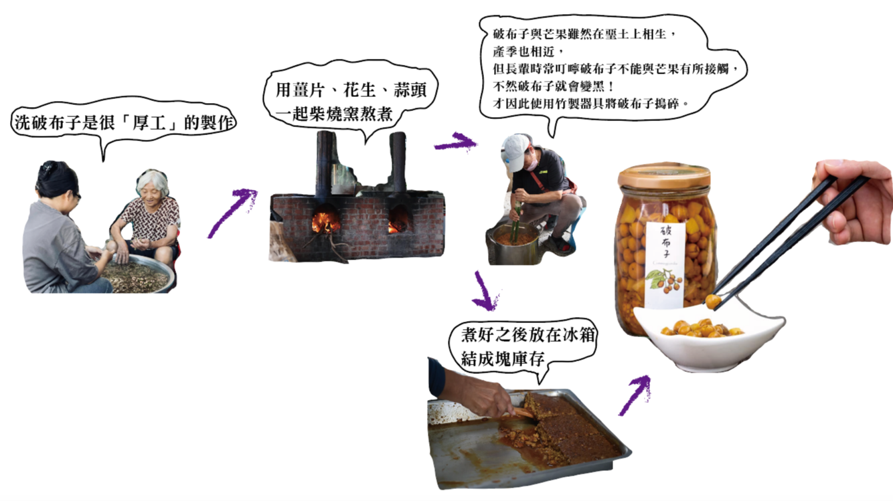
（註） [文化銀行]西拉雅族的最強佐料——破布子 https://bankofculture.com/archives/3615
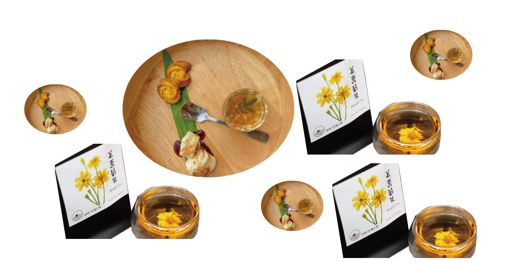
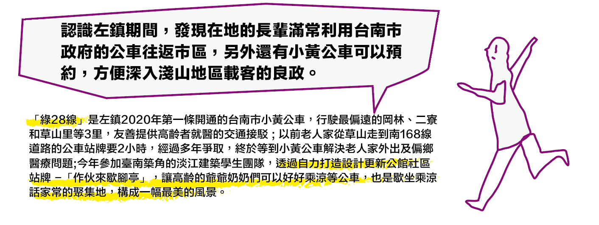
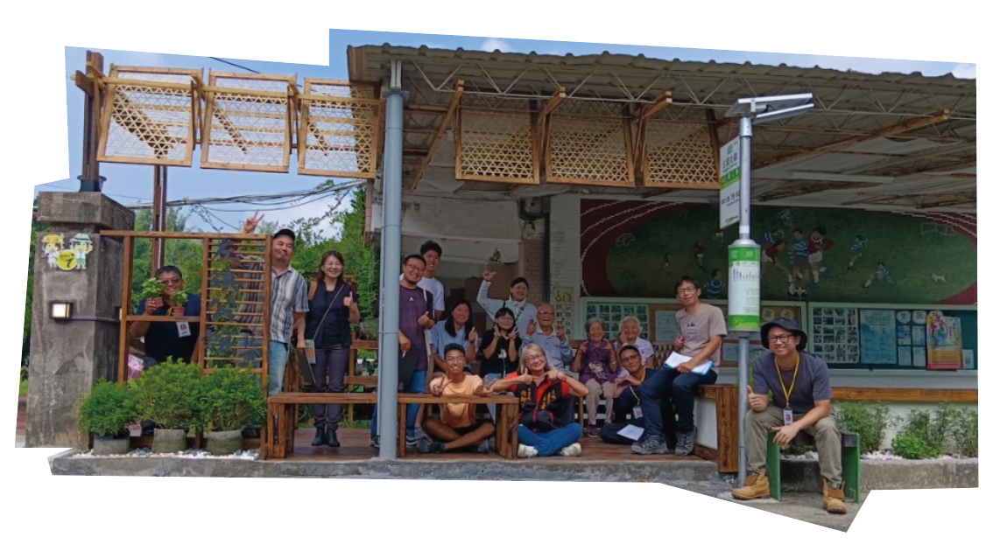
台南築角小黃公車站-公舘社區站
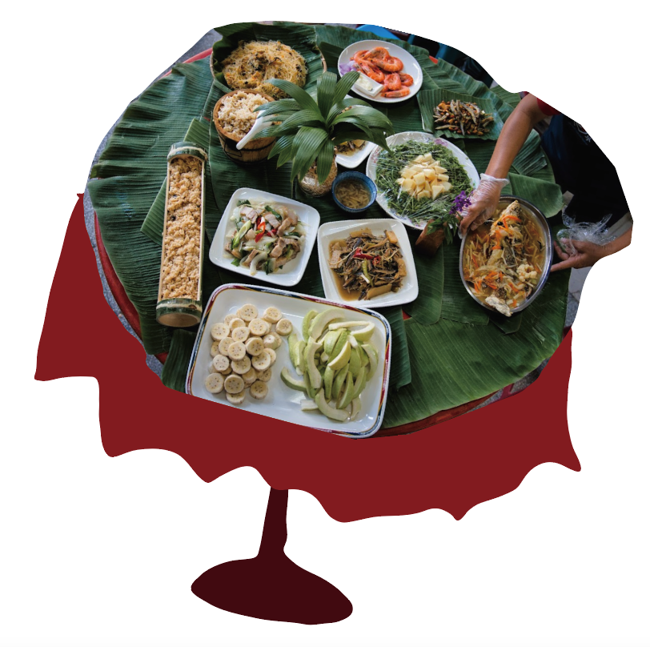
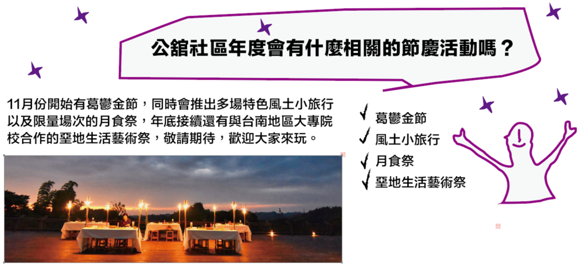
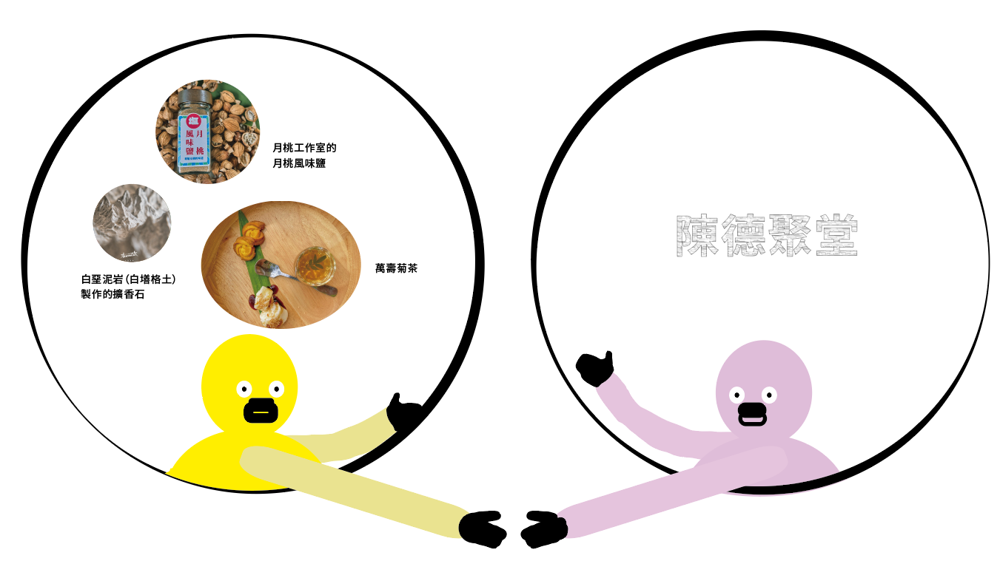
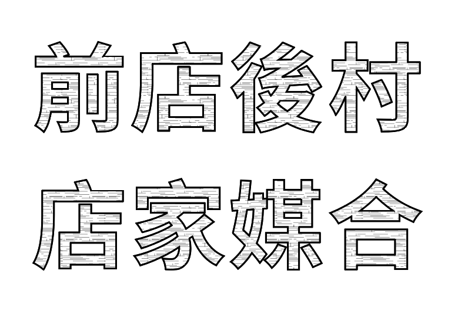
前往➜